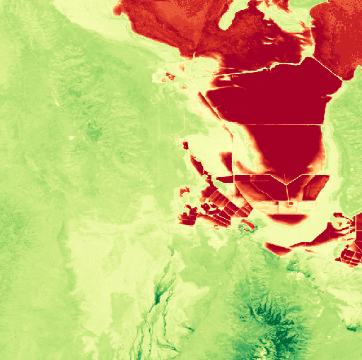

🧮 Band Math Expressions#
localtileserver supports on-the-fly band math expressions, enabling you to
compute derived imagery like vegetation indices (NDVI), normalized difference
water indices (NDWI), and custom band combinations without pre-processing your
raster data.
Expressions use the syntax from rio-tiler
where bands are referenced as b1, b2, b3, etc. (1-indexed).
Basic Usage#
Use the expression parameter with get_leaflet_tile_layer() or the
TileClient methods:
from localtileserver import TileClient, get_leaflet_tile_layer, examples
from ipyleaflet import Map
client = examples.get_landsat()
# NDVI: (NIR - Red) / (NIR + Red)
# Landsat bands: b4 = NIR, b3 = Red
t = get_leaflet_tile_layer(client,
expression='(b4-b3)/(b4+b3)',
vmin=-0.5, vmax=0.5,
colormap='rdylgn')
m = Map(center=client.center(), zoom=client.default_zoom)
m.add(t)
m
We can also view expression results as a thumbnail:
client.thumbnail(expression='(b4-b3)/(b4+b3)', colormap='rdylgn',
vmin=-0.5, vmax=0.5)

Common Expressions#
Here are some frequently used band math expressions for Landsat-style imagery:
Index |
Expression |
Description |
|---|---|---|
NDVI |
|
Normalized Difference Vegetation Index |
NDWI |
|
Normalized Difference Water Index |
EVI |
|
Enhanced Vegetation Index |
Simple Ratio |
|
NIR/Red ratio |
Brightness |
|
Average visible brightness |
Note
Band numbering is 1-indexed and corresponds to the band order in the source raster file. Check your file’s metadata to identify which bands correspond to which wavelengths.
REST API#
Expressions can also be used via the REST API:
# Tile with NDVI expression
GET /api/tiles/{z}/{x}/{y}.png?filename=multispectral.tif&expression=(b4-b1)/(b4+b1)&vmin=-1&vmax=1&colormap=RdYlGn
# Thumbnail with expression
GET /api/thumbnail.png?filename=multispectral.tif&expression=(b4-b1)/(b4+b1)
Note
When using expression, the indexes parameter is ignored. They are
mutually exclusive: use one or the other.